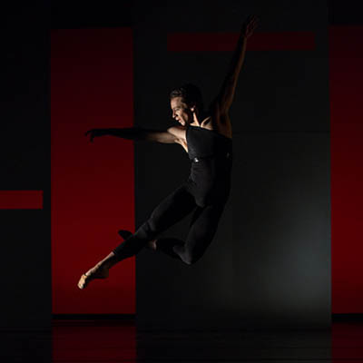

The life dramatic
103 shows to see on stage this fall and winter

August
The Drunkard and The Olio
Every Saturday
Tulsa Spotlight Theatre
Alex Boye in Concert
Aug. 22
Bartlesville Community Center
Playforburk Foundation
Steven Curtis Chapman
Aug. 22
Broken Arrow
Performing Arts Center
September
Brown Bag It: Shelby Eicher
Sept. 2
Kathleen Westby Pavilion, PAC
PAC Trust
Lecture: Dr. Temple Grandin
Sept. 3
Main Stage, VanTrease PACE
Tulsa Community College
The Rag Tag Rebel Circus
Sept. 4-5
Nightingale Theater
Mystic Circus
New Genre Arts Festival XXII-B
Sept. 4-12
Living Arts
Miss Saigon
Sept. 4-20
John H. Williams Theatre, PAC
Theatre Tulsa
Half Life
Sept. 11-12
Liddy Doenges Theatre, PAC
Living Arts
Jaimee Paul and the Music of James Bond
Sept. 11-12
Main Stage, VanTrease PACE
Signature Symphony
Godzilla’s Home and Garden Show
Sept. 11-19
Nightingale Theater
Pop Up Players
Creations in Studio K
Sept. 11-20
Studio K
Tulsa Ballet

Tulsa Ballet’s Creations in Studio K features world premieres from up-and-coming national and international choreographers. The forward-thinking annual series gives Tulsa audiences the chance to experience the cutting edge of contemporary ballet. This year’s series features new work by Dwight Rhoden (artistic director of Complexions Contemporary Ballet), Jorma Elo (resident choreographer of Boston Ballet), and the company’s own Ma Cong.
Cong is fast becoming an international sensation—there’s even a documentary about his life in the works. Artistic Director Marcello Angelini says of Cong’s piece: “It’s very romantic, even without a real plot. With every new work I say, ‘That’s his best one!’ and I’ll say that about his upcoming world premiere, too.”
The ballets by Rhoden and Elo were still being created as of this writing, but past experience of Complexions (via Choregus Productions) and of Elo’s Slice to Sharp predicts there’s lots of visceral energy being generated down on Brookside.
Tulsa Ballet believes that investing in fresh work doesn’t just mean tapping marquee names, but also looking within the community. In recent years, the Creations series has featured local modern dance companies as opening acts during the last week of the run. This year, a free showcase on September 20 presents the participating companies—Bell House, Living Water, Nina Madsen Dance, Portico Dans Theatre and Tulsa Modern
Movement.
Parsons Dance
Sept. 12
Chapman Music Hall, PAC
Choregus Productions
I’m Fine: Performance artwork/animation installation
Sept. 12
Living Arts
Joseph and the Amazing Technicolor Dreamcoat
Sept. 12-13
Bartlesville Community Center
Broadway in Bartlesville
Pacifica Quartet
Sept. 13
John H. Williams Theatre, PAC
Chamber Music Tulsa
Drawkcab Brown’s Astounding Defeat of Peg-Leg Petey and his Piratin’ Keet!
Sept. 18-27
Tulsa Spotlight Theatre
Spotlight Children’s Theatre
The Illusionists
Sept. 18-20
Chapman Music Hall, PAC
Celebrity Attractions
The Price is Right Live!
Sept. 20
BOK Center
SMG Tulsa
Fables and Fairytales
Sept. 23
Bartlesville Community Center
Bartlesville Symphony Orchestra
Romeo and Juliet
Sept. 23-27
Howard Auditorium
ORU Theatre
The Piano Men starring Jim Witter
Sept. 24
Bartlesville Community Center
Bartlesville Community Concert Association
Jay Leno
Sept. 24
The Joint
Sean Forbes
Sept. 25
Main Stage, VanTrease PACE
Next to Normal
Sept. 25-27
John H. Williams Theatre, PAC
Theatre Tulsa
Wait Until Dark
Sept. 25-Oct. 4
Sapulpa Community Theatre
TSO Classics: Experience the Exotic
Sept. 26
Chapman Music Hall, PAC
Tulsa Symphony
Joseph and the Amazing Technicolor Dreamcoat
Sept. 27
Broken Arrow Performing Arts Center
Alonzo King LINES Ballet
Sept. 30
Chapman Music Hall, PAC
Choregus Productions
October
Dracula
Oct. 1-3
Liddy Doenges Theatre, PAC
Sign of the Rose
Jazz at Lincoln Center Orchestra with Wynton Marsalis
Oct. 2
Chapman Music Hall, PAC
Sistema Tulsa
.jpg)
Transformative music education program El Sistema was founded in Venezuela in 1975 and has spread to 35 countries around the world. In support of El Sistema’s launch in Tulsa, legendary jazz trumpeter Wynton Marsalis will perform October 2 with his 15-piece Jazz at Lincoln Center Orchestra. Marsalis’ arts education efforts are as tireless and masterful as his musicianship, which has earned him nine Grammy Awards and the only Pulitzer Prize ever given to a jazz composer.
Sistema Tulsa has partnered with Boston Avenue United Methodist Church and Tulsa Public Schools to use music education as a change agent in underserved communities. Founding director Jose Luis Hernandez shared his vision for the partnership with the district’s Board of Education last month:
“Sistema Tulsa affirms that the intensive study of music, framed as part of a social or community experience, can help participants develop critical habits of mind that will allow them to be persistent in spite of adversity, produce accurate work, work well with others, and think about their future in a positive light.”
The benefit concert offers a taste of those virtues—and some transcendent sonic poetry—to grown-ups, too.
Sue Monk Kidd: The Writing of Life
Oct. 2
Chapman Music Hall, PAC
Tulsa Town Hall
The BFG (Big Friendly Giant)
Oct. 2
John H. Williams Theatre, PAC
PAC Trust
The Miser
Oct. 2-11
Studio Theatre, VanTrease PACE
Tulsa Community College
Tchaikovsky’s 1812 Overture and Respighi’s Pines of Rome
Oct. 3
Main Stage, VanTrease PACE
Signature Symphony
Quartetto di Cremona
Oct. 4
John H. Williams Theatre
Chamber Music Tulsa
Ragtime Piano: Jeff Barnhart and Brian Holland
Oct. 6
John H. Williams Theatre, PAC
Ragtime for Tulsa
TCC Community Band and Orchestra Concert
Oct. 6
Main Stage, VanTrease PACE
Tulsa Community College
Tax Dermia: Mexico City Performance Artists
Oct. 6-7
Living Arts
Brown Bag It: Wika & Mayfield
Oct. 7
Kathleen Westby Pavilion, PAC
PAC Trust
Tulsa Community Band, TCC Concert Band and Jazz Band
Oct. 8
Main Stage, VanTrease PACE
Tulsa Community College
Burn This
Oct. 8-11
Liddy Doenges Theatre, PAC
Theatre Pops
Terry Fator
Oct. 9
The Joint
Honeymoon at Graveside Manor
Oct. 9-18
Broken Arrow Community Playhouse
Minions & Masterminds:
Concert
Oct. 9-18
Tulsa Spotlight Theatre
Spotlight Children’s Theatre
Symphonic Cinema: John Williams and Friends
Oct. 10
Bartlesville Community Center
Bartlesville Symphony Orchestra
Time for Three
Oct. 10
John H. Williams Theatre, PAC
Choregus Productions
TCC Concert Choir, Show Choir and Orchestra
Oct. 13
Main Stage, VanTrease PACE
Tulsa Community College
Men are from Mars, Women are from Venus: Live!
Oct. 13-15
John H. Williams Theatre, PAC
Celebrity Attractions
La bohème
Oct. 16-18
Chapman Music Hall, PAC
Tulsa Opera
The Rocky Horror Show
Oct. 16-24
Charles E. Norman Theatre, PAC
Tulsa Project Theatre
Dialectic Grio: Spoken Word Event
Oct. 17
Living Arts
The Taming of the Shrew
Oct. 23-24
Chapman Music Hall, PAC
Tulsa Ballet
Jerry Herman Songbook
Oct. 23-24
Main Stage, VanTrease PACE
Signature Symphony
Waiting for Godot
Oct. 23-25
John H. Williams Theatre, PAC
American Theatre Company
Hedwig and the Angry Inch
Oct. 23-Nov. 2
Liddy Doenges Theatre, PAC
Theatre Tulsa
Cowboy Jim Garling Western Swing Show
Oct. 30
Tulsa Spotlight Theatre
Bad Jews
Oct. 30-Nov. 7
Charles E. Norman Theatre, PAC
Heller Theatre Company
TSO Pops: Halloween Symphony Spooktacular
Oct. 31
Chapman Music Hall, PAC
Tulsa Symphony
November
Armchair Traveler
Nov. 1
Bartlesville Community Center
Bartlesville Choral Society
Gary Mauer
Nov. 4
Bartlesville Community Center
Bartlesville Community Concert Association
Brown Bag It: Jambalaya Jass Band
Nov. 4
Kathleen Westby Pavilion, PAC
PAC Trust
You Can’t Take it With You
Nov. 5-8
Howard Auditorium
ORU Theatre
The Cat in the Hat
Nov. 6
John H. Williams Theatre, PAC
PAC Trust
James Carville: Politics Today and Tomorrow
Nov. 6
Chapman Music Hall, PAC
Tulsa Town Hall
An Evening with Tommy Emmanuel
Nov. 7
Chapman Music Hall, PAC
PAC Trust
Don Williams with special guest Colm Kirwan
Nov. 8
Bartlesville Community Center
Little Wing
A Christmas Story: The Musical
Nov. 10-15
Chapman Music Hall, PAC
Celebrity Attractions
The Great Gatsby
Nov. 13-22
Liddy Doenges Theatre, PAC
Theatre Tulsa
One Man Two Guvnors
Nov. 13-22
Main Stage, VanTrease PACE
Tulsa Community College
The Ioudenitch Family
Nov. 14
Main Stage, VanTrease PACE
Signature Symphony
Weiss Kaplan Stumpf Trio
Nov. 15
John H. Williams Theatre, PAC
Chamber Music Tulsa
TCC Ensemble Concert
Nov. 17
Main Stage, VanTrease PACE
Tulsa Community College
The Book of Mormon
Nov. 17-22
Chapman Music Hall, PAC
PAC Trust
.jpg)
In Spring 2011, Broadway watched with equal parts horror and schadenfreude as its most expensive production in history ($100+ million), Spider-Man: Turn Off the Dark, crashed and burned spectacularly. At the same time, the pranksters behind “South Park” opened the relatively modest musical The Book of Mormon.
No one expected Trey Parker and Matt Stone’s foul-mouthed satire of religion and first-world privilege to become the belle of Broadway. This was, after all, conceived by the vulgar minds responsible for the “fish dicks” meme and the explicit puppet sex of “Team America”—but when the curtains fell and the house lights came up, it was exactly that. Critics and audiences alike responded with rapturous praise and record-breaking ticket sales, and the play swept that year’s Tony Awards. Even the Church of Jesus Christ of Latter-Day Saints responded in good humor, taking out Playbill ads that read, “You’ve seen the play, now read the book.”
The touring production finally lands in Tulsa this fall (they hit OKC last year), and it’s easily the most anticipated show of the season.
The musical tells the story of two naïve Mormon missionaries sent to Uganda to proselytize the Good News, only to run into brutal warlords, AIDS, famine and general third-world malaise that collides with their sheltered, upbeat view of the world. Did we mention it’s a comedy with song-and-dance numbers?
Shirley Elliott, program director for the Tulsa Performing Arts Center Trust, reminds Tulsans to leave the kids at home for this one, as the blue, anarchist comedic tendencies of Parker and Stone are on full display.
“For people who know what these writers are like and the kind of work they do, that’s the biggest clue,” Elliott said. “If you like the humor and you like the message of the ‘South Park’ writers, then you’re going to enjoy Book of Mormon—it’s very funny. It has all of the elements that a Broadway show should have: acting, singing, dancing. And all of those things are perfected in this production.”
TCC Faculty Recital
Nov. 19
Main Stage, VanTrease PACE
Tulsa Community College
Sax & Violins
Nov. 21
Bartlesville Community Center
Bartlesville Symphony Orchestra
Die Laughing: Improv Troupe
Nov. 30
Studio Theatre,
VanTrease PACE
Tulsa Community College
December
TCC Concert Choir, Orchestra and Concert Band
Dec. 1
Main Stage, VanTrease PACE
Tulsa Community College
Brown Bag It: Tulsa Festival Ringers
Dec. 2
John H. Williams Theatre, PAC
PAC Trust
TCC Show Choir, Jazz Combo and Jazz Band
Dec. 3
Main Stage, VanTrease PACE
Tulsa Community College
G2K (Getting to Know) Rodgers and Hammerstein’s Cinderella
Dec. 4-13
Liddy Doenges Theatre, PAC
Theatre Tulsa Family
Cheaper By the Dozen
Dec. 4-13
Broken Arrow Community Playhouse
Twas The Last Mailing Day Before Christmas
Dec. 4-13
Sapulpa Community Theatre
Tulsa! A Radio Christmas Spectacular
Dec. 4-13
Tulsa Spotlight Theatre
Spotlight Children’s Theatre
TSO Pops: Home for the Holidays
Dec. 5-6
Chapman Music Hall, PAC
Tulsa Symphony
Messiah
Dec. 6
Bartlesville Community Center
Bartlesville Choral Society
Ragtime
Dec. 7
Bartlesville Community Center
Broadway in Bartlesville
Ragtime: The Musical
Dec. 8
Broken Arrow Performing
Arts Center
TCC Community Band and Orchestra
Dec. 8
Main Stage, VanTrease PACE
Tulsa Community College
A Christmas Carol
Dec. 10-20
John H. Williams Theatre, PAC
American Theatre Company
The Nutcracker
Dec. 11-20
Chapman Music Hall, PAC
Tulsa Ballet
The Ten Tenors: Home for the Holidays
Dec. 15
Broken Arrow Performing
Arts Center
Christmas in Tulsa
Dec. 18-19
Main Stage, VanTrease PACE
Signature Symphony
Disney’s Beauty and the Beast
Dec. 22-23
Chapman Music Hall, PAC
Celebrity Attractions
January
David L. Boren: Fighting for America’s Future
Jan. 15
Chapman Music Hall, PAC
Tulsa Town Hall
A Chorus Line
Jan. 15-23
John H. Williams Theatre, PAC
Theatre Tulsa
TSO Classics: Dreams and Revolution
Jan. 16
Chapman Music Hall, PAC
Tulsa Symphony
Youth Speaks
Jan. 16
Living Arts
MARVEL Universe LIVE!
Jan. 21-24
BOK Center
SMG Tulsa
Barber, Bernstein and Boyer
Jan. 23
Main Stage, VanTrease PACE
Signature Symphony
Venue directory
Bartlesville Community Center
300 S.E. Adams Blvd., Bartlesville
bartlesvillecommunitycenter.com
BOK Center
200 S. Denver Ave.
bokcenter.com
Broken Arrow Community Playhouse
1800 S. Main St., Broken Arrow
bacptheatre7471.wix.com/bacp
Broken Arrow Performing Arts Center
701 S. Main St., Broken Arrow
brokenarrowpac.com
Howard Auditorium
7777 S. Lewis Ave.
facebook.com/orutheatre
The Joint
777 W. Cherokee St., Catoosa
hardrockcasinotulsa.com
Living Arts
307 E. M.B. Brady St.
livingarts.org
Nightingale Theater
1416 E. 4th St.
nightingaletheater.com
Sapulpa Community Theatre
124 S. Water St., Sapulpa
sapulpatheatre.org
Studio K
1212 E. 45th Pl.
tulsaballet.org
Tulsa Performing Arts Center
110 E. 2nd St.
tulsapac.com
Tulsa Spotlight Theatre
1381 Riverside Dr.
spotlighttheater.org
VanTrease PACE
10300 E. 81st St.
tulsacc.edu
.jpg)
.jpg)